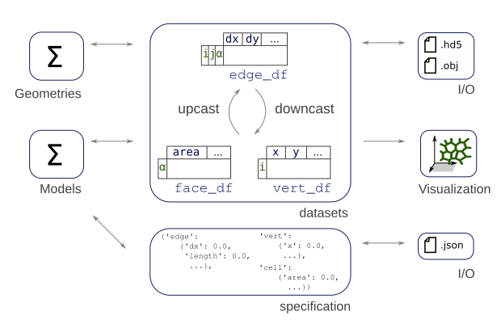

Basic Usage of the tyssue library¶
Easy creation of a 2D epithelial sheet¶
In tyssue, an apical junction network is represented as a mesh. The structure of this mesh is stored in three tables (pandas.DataFrame objects) corresponding to vertices, faces and edges. The structure and data associated with these meshes are detailed bellow.
%matplotlib inline
# Core object
from tyssue import Sheet
# Simple 2D geometry
from tyssue import PlanarGeometry as geom
# Visualisation
from tyssue.draw import sheet_view
sheet = Sheet.planar_sheet_2d(
'basic2D', # a name or identifier for this sheet
nx=6, # approximate number of cells on the x axis
ny=7, # approximate number of cells along the y axis
distx=1, # distance between 2 cells along x
disty=1 # distance between 2 cells along y
)
geom.update_all(sheet)
The sheet_view function displays the created object in a matplotlib figure:
fig, ax = sheet_view(sheet)
fig.set_size_inches(8, 8)
We can have a cleaner, better ordered sheet with the sanitize method:
# Give the tissue a nice hear cut ;)
sheet.sanitize(trim_borders=True, order_edges=True)
geom.update_all(sheet)
Here we pass an option to display the edge directions see the visualization tutorial for details
fig, ax = sheet_view(
sheet,
mode="2D",
edge={"head_width": 0.1}
)
fig.set_size_inches(8, 8)
You can look at the
tyssue.generationmodule for more sheet creation utilities.
A remark on the half-edge data structure¶
As is represented in the above graph, each edge between two cells is composed of two half-edges (only one half-edge is present in the border ones). This makes it easier to compute many cell-specific quantities, as well as keeping a well oriented mesh. This is inspired by CGAL polyhedral surfaces.
Datasets¶
The data associated with the mesh displayed above, i.e. the points positions,
the connectivity information, etc. is stored in pandas DataFrame objects, hold together in the datasets dictionnary.
Depending on the geometry, the following dataframes are populated:
datasets["edge"]orsheet.edge_df: The edge related dataframe contains the connectivity information: source and target vertices, associated face and (for thick tissues) the associated cell body, geometry data associated with the edge, such as its length and any suplemental data, such as a color or a dynamical parameter (an elasticity for example)datasets["vert"]orsheet.vert_df: The vertices related dataframe. In the apical junction mesh above, those are the vertices at the cells junctions. It usually holds the coordinates of the points, and geometry or dynamical data.datasets["face"]orsheet.face_df: The faces related dataframe. For a thin, 2D tissue, this corresponds to a cell of the epithelium, delimited by its edges. In thick, 3D models, one cell has several faces (the apical, sagittal and basal ones for a 3D monolayer, for example).datasets["cell"]orsheet.cell_df: The cells related dataframe, only for 3D, thick, epithelium. Each cell have several faces.
for element, data in sheet.datasets.items():
print(f"{element} table has shape {data.shape}")
vert table has shape (48, 3)
edge table has shape (128, 20)
face table has shape (25, 7)
sheet.datasets['edge'].head()
| trgt | nz | length | face | srce | dx | dy | sx | sy | tx | ty | fx | fy | ux | uy | rx | ry | sub_area | is_valid | phi | |
|---|---|---|---|---|---|---|---|---|---|---|---|---|---|---|---|---|---|---|---|---|
| edge | ||||||||||||||||||||
| 0 | 30 | 0.28125 | 0.750000 | 0 | 28 | 0.0 | 0.75 | 1.5 | 0.625 | 1.5 | 1.375 | 1.125 | 1.250 | 0.000000 | 1.000000 | 0.375 | -0.625 | 0.140625 | True | -0.643501 |
| 1 | 9 | 0.15625 | 0.559017 | 0 | 30 | -0.5 | 0.25 | 1.5 | 1.375 | 1.0 | 1.625 | 1.125 | 1.250 | -0.894427 | 0.447214 | 0.375 | 0.125 | 0.078125 | True | 0.643501 |
| 2 | 5 | 0.21875 | 0.559017 | 0 | 9 | -0.5 | -0.25 | 1.0 | 1.625 | 0.5 | 1.375 | 1.125 | 1.250 | -0.894427 | -0.447214 | -0.125 | 0.375 | 0.109375 | True | 1.570796 |
| 3 | 28 | 0.34375 | 1.250000 | 0 | 5 | 1.0 | -0.75 | 0.5 | 1.375 | 1.5 | 0.625 | 1.125 | 1.250 | 1.788854 | -1.341641 | -0.625 | 0.125 | 0.171875 | True | 1.570796 |
| 4 | 43 | 0.37500 | 0.750000 | 1 | 29 | 0.0 | 0.75 | 2.5 | 0.625 | 2.5 | 1.375 | 2.000 | 1.125 | 0.000000 | 1.000000 | 0.500 | -0.500 | 0.187500 | True | -0.643501 |
The edge_df dataframe contains most of the information. In particular, each time the geometry is updated with the geom.update_all(sheet) function, the positions of the source and target vertices of each edge are copied to the "sx", "sy" and "tx", "ty" columns, respectively.
sheet.face_df.head()
| y | is_alive | perimeter | area | x | num_sides | id | |
|---|---|---|---|---|---|---|---|
| face | |||||||
| 0 | 1.250000 | 1 | 3.118034 | 0.5000 | 1.125000 | 4 | 0 |
| 1 | 1.125000 | 1 | 3.618034 | 0.8750 | 2.000000 | 5 | 0 |
| 2 | 1.125000 | 1 | 3.618034 | 0.8750 | 3.000000 | 5 | 0 |
| 3 | 1.125000 | 1 | 3.618034 | 0.8750 | 4.000000 | 5 | 0 |
| 4 | 1.208333 | 1 | 2.427051 | 0.1875 | 4.666667 | 3 | 0 |
We can use all the goodies from pandas DataFrames objects. For example, it is possible to compute the average edge length for each face like so:
sheet.edge_df.groupby('face')['length'].mean().head()
face
0 0.779508
1 0.723607
2 0.723607
3 0.723607
4 0.809017
Name: length, dtype: float64
Specifications¶
Specifications are defined as a nested dictionnary, sheet.specs. For each element ("vert", "edge", face", "cell"), the specification defines the columns of the corresponding DataFrame and their default values. An extra key at the root of the specification is called "settings", and can hold specific parameters, for example the arguments for an energy minimization procedure. For exemple, consider the following spec dictionnary
spec = {
"vert": {
"x": 0.0,
"y": 0.0,
"active": True
},
"edge": {
"tension": 0.0,
"length": 1,
},
"face": {
"area": 0.0,
"alive": True,
},
}
This defines e.g an "area" column for sheet.face_df.
By calling sheet.update_specs(specs) method, those columns will be added to the respective dataframes.
sheet.update_specs({"edge": {"tension": 0.0}})
sheet.edge_df['tension'].head()
edge
0 0.0
1 0.0
2 0.0
3 0.0
4 0.0
Name: tension, dtype: float64
Optionaly, you can pass reset=True to update_spec (a warning is emitted):
sheet.update_specs(
{"edge": {"tension": 1.0}},
reset=True
)
sheet.edge_df['tension'].head()
Reseting column tension of the edge dataset with new specs
edge
0 1.0
1 1.0
2 1.0
3 1.0
4 1.0
Name: tension, dtype: float64
Input and Output¶
The ‘native’ format is to save the datasets to hdf5 via pandas.HDFStore. The io.obj also provides functions to export the junction mesh or triangulations to the wavefront OBJ format (requires vispy), for easy import in 3D software such as Blender.
Here is the code to save the data in wavefront OBJ:
obj.save_junction_mesh('junctions.obj', sheet)
The standard data format for the datasets is HDF:
from tyssue.io import hdf5
Writing¶
hdf5.save_datasets('tmp_data.hdf5', sheet)
Reading¶
dsets = hdf5.load_datasets('tmp_data.hdf5')
sheet2 = Sheet('reloaded', dsets)
!rm tmp_data.hdf5
Specs can be saved as json files:
import json
with open("tmp_specs.json", "w") as jh:
json.dump(sheet.specs, jh)
And reloaded accordingly
with open("tmp_specs.json", "r") as jh:
specs = json.load(jh)
sheet2.update_specs(specs, reset=False)
!rm tmp_specs.json
Upcasting and downcasting data¶
It is often necessary to use a vertex-associated data on a computation involving faces, are other combinations of elements. Tyssue offers the upcast and downcast mechanisms to do that.
This part is less important for an immediate use of tyssue, you can skip it at first.
Upcasting¶
Geometry or physics computations often require to access for example
the cell related data on each of the cell’s edges. The Epithelium
class and its derivatives defines utilities to make this,
i.e copying the area of each face to each of its edges:
print('Faces associated with the first edges:')
print(sheet.edge_df['face'].head())
print('\n')
# First edge associated face
face = sheet.edge_df.loc[0, 'face']
print('Area of cell # {}:'.format(int(face)))
print(sheet.face_df.loc[face, 'area'])
print('\n')
print('Upcasted areas over the edges:')
print(sheet.upcast_face(sheet.face_df['area']).head())
Faces associated with the first edges:
edge
0 0
1 0
2 0
3 0
4 1
Name: face, dtype: int64
Area of cell # 0:
0.5
Upcasted areas over the edges:
edge
0 0.500
1 0.500
2 0.500
3 0.500
4 0.875
Name: area, dtype: float64
The values have indeed been upcasted. This can also be done with the source and target vertices
(sheet.upcast_srce, sheet.upcast_trgt) and cells in the 3D case (sheet.upcast_cell).
Downcasting¶
This is usually done by groupby operations as shown above.
Syntactic sugar is available for summation, e.g. over every edges with a given source:
sheet.sum_srce(sheet.edge_df['line_tension']).head()
---------------------------------------------------------------------------
KeyError Traceback (most recent call last)
~/miniconda3/envs/tyssue/lib/python3.9/site-packages/pandas/core/indexes/base.py in get_loc(self, key, method, tolerance)
3079 try:
-> 3080 return self._engine.get_loc(casted_key)
3081 except KeyError as err:
pandas/_libs/index.pyx in pandas._libs.index.IndexEngine.get_loc()
pandas/_libs/index.pyx in pandas._libs.index.IndexEngine.get_loc()
pandas/_libs/hashtable_class_helper.pxi in pandas._libs.hashtable.PyObjectHashTable.get_item()
pandas/_libs/hashtable_class_helper.pxi in pandas._libs.hashtable.PyObjectHashTable.get_item()
KeyError: 'line_tension'
The above exception was the direct cause of the following exception:
KeyError Traceback (most recent call last)
<ipython-input-19-63845d2edfe8> in <module>
----> 1 sheet.sum_srce(sheet.edge_df['line_tension']).head()
~/miniconda3/envs/tyssue/lib/python3.9/site-packages/pandas/core/frame.py in __getitem__(self, key)
3022 if self.columns.nlevels > 1:
3023 return self._getitem_multilevel(key)
-> 3024 indexer = self.columns.get_loc(key)
3025 if is_integer(indexer):
3026 indexer = [indexer]
~/miniconda3/envs/tyssue/lib/python3.9/site-packages/pandas/core/indexes/base.py in get_loc(self, key, method, tolerance)
3080 return self._engine.get_loc(casted_key)
3081 except KeyError as err:
-> 3082 raise KeyError(key) from err
3083
3084 if tolerance is not None:
KeyError: 'line_tension'